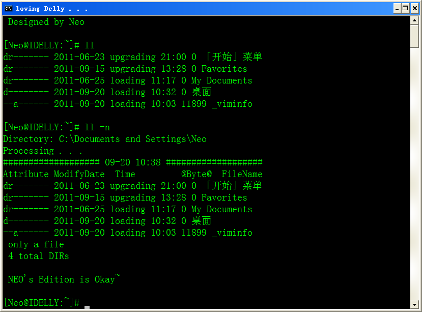
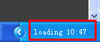

通过实现理想，证明实现理想是可能的；
通过开发开源软件并发布，证明开源软件是可能的；
即使是在中国。
通过开发开源软件并发布，证明开源软件是可能的；
即使是在中国。
ll
因为 bash shell 的原因，斑驳一直在尝试着在 Windows 中写一写类似 shell命令 的脚本。 下面这个脚本就是第一个的试验品。前前后后改过很多种运作方式，一直没有很好的解决问题， 现在仍然有漏洞，大家多多反馈哦
@echo off
REM 针对本程序斑驳不负担保责任，欲知详细请查看 GPL.txt
REM 这是自由的程序，欢迎您在特定条件下再发布本程序。
REM
REM 再次感谢使用斑驳的脚本
REM 斑驳敬上
REM
if "%1"=="/?" (
echo list files more details, bash shell like
echo.
echo ll [path] [option] [FileName]
echo.
echo. Options:
echo. /A[:Attributes] list all files
echo. or specific attribution
echo. R, A, H, S and so on
echo. -n see more details
echo.
goto eof
)
if not "%*"=="-f" if "%cd% + %*"=="%llLastAD%" (goto showup)
setlocal enabledelayedexpansion
set Args=
set neo=
:loopBegin
if .%1==. goto loopEnd
if .%1==.-f shift && goto loopBegin
if NOT .%1==.-n goto Classic
set neo=1
shift
goto loopBegin
:Classic
if exist %1 (
set filename=%1
shift
goto loopBegin
)
set Args=!Args! %1
shift
goto loopBegin
:loopEnd
if not defined neo goto bash
echo Directory: %CD%
echo Processing . . .
:bash
if defined filename (
for %%i in (%filename%) do (echo %%~aznxti > %tmp%\lltmp.neo)
set neostr1=
set neostr2=Time @Byte@
goto showup
)
dir %Args% /O:SEN > %tmp%\lltmp.db 2> nul
if errorlevel 1 echo Invalid param. please type ll /? for help & goto end
:llgo
set pathhere=%cd%
pushd \
set paththere=%cd%
popd
for /f %%i in ('find "个文件" "%tmp%\lltmp.db"') do set countfiles=%%i
for /f %%i in ('find "个目录" "%tmp%\lltmp.db"') do set countdirs=%%i
if not "%pathhere%"=="%paththere%" (set /a countdirs=%countdirs%-2)
set /a calc=%countfiles%+%countdirs%
if .%calc%==.0 echo. - Empty Here- && goto end
echo. %tmp%\lltmp.neo > %tmp%\lltmp.neo
set pathd=5
if "%pathhere%"=="%paththere%" (set /a pathd-=2)
for /f "tokens=3" %%i in ('dir c:\Window? ^| find "<"') do (
echo #%%i# > %tmp%\lltmp.neo.tmp
find "<DIR>" %tmp%\lltmp.neo.tmp > nul
if errorlevel 1 (set timed=4*) else (set timed=3*)
del %tmp%\lltmp.neo.tmp
)
if %timed%==4* (
set neostr1=#####
set neostr2= Time @Byte@
) else (
set neostr1=
set neostr2=Time @Byte@
)
for /f "skip=%pathd% tokens=%timed%" %%i in ('find ":" "%tmp%\lltmp.db"') do (echo %%~aznxtj >> %tmp%\lltmp.neo)
:showup
if defined neo (
echo ##############%neostr1% %date:~5,5% %time:~0,5% ##############%neostr1%
echo Attribute ModifyDate %neostr2% FileName ) else (
type %tmp%\lltmp.neo | find /v "%tmp%\lltmp.neo" | more
goto end )
if defined filename (goto eof)
if %countfiles% EQU 0 goto showdir
if %countfiles% EQU 1 (
echo. only a file >> %tmp%\lltmp.neo ) else (
echo. %countfiles% total files >> %tmp%\lltmp.neo )
:showdir
if %countdirs% LSS 0 goto eof
if %countdirs% EQU 1 (
echo. and a direcotry >> %tmp%\lltmp.neo ) else (
echo. %countdirs% total DIRs >> %tmp%\lltmp.neo )
type %tmp%\lltmp.neo | find /v "%tmp%\lltmp.neo" | more
:eof
echo. NEO's Edition is Okay~
echo.
:end
if exist %tmp%\lltmp.db del /q %tmp%\lltmp.db > nul
endlocal
set llLastAD=%cd% + %*
补充
ls 是 shell 中列取目录中文件的命令，一般在 .bashrc 中会做别名 ll='ls -l'。 频繁切换平台时，斑驳常常在 Windows 中使用 ll 回车、clear 回车... 但是又不想安装第三方的 类shell环境，所以就自给自足了。 这个版本的 ll 有 -n 选项，有点意思哦。 如果目录中文件过多，显示会稍微慢了一点，所以又添加了重复位置和命令检测的功能。 如果当期的目录结构发生变化之后，重复上一个命令就不会显示出来了； 为此又加入了 -f 选项，强制更新列表库，生成详细列表。

额外说明一下，斑驳修改了系统时间显示的字符。
原本表示上午 am 改成 loading，下午的 pm 改成了 upgrading。
比如现在时间是上午十点多，斑驳机器的右下角就会显示出

这样子导致就导致了后面的文件大小以及文件名不能自动对齐的问题。
如果读者的机器上并没有做这种设定，这些信息就会比较整齐的显示出来了。返回 | 置顶 | 下一页